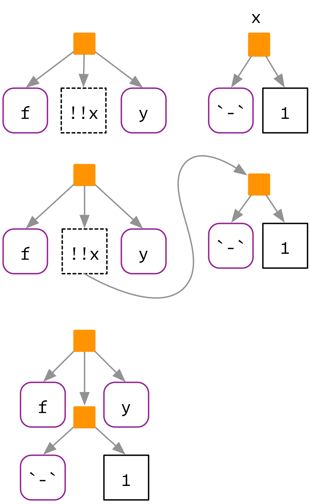
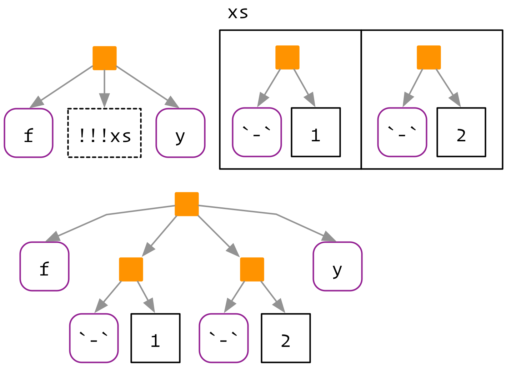
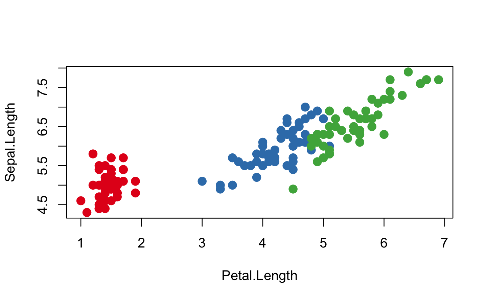
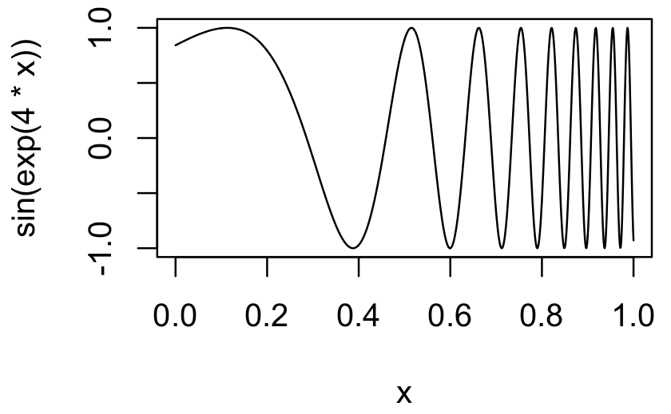

19 Quasiquotation
19.1 Introduction
Now that you understand the tree structure of R code, it’s time to come back to one of the fundamental ideas that make expr() and ast() work: quasiquotation. There are two sides to quasiquotation:
Quotation allows you to capture the AST associated with an argument. As a function author, this gives you a lot of power to influence how expressions are evaluated.
Unquotation allows you to selectively evaluate parts of a quoted expression. This is a powerful tool that makes it easy to build up a complex AST from simpler fragments.
The combination of these two ideas makes it easy to compose expressions that are mixtures of direct and indirect specification, and helps to solve a wide variety of challenging problems.
Quoting functions have deep connections to Lisp macros. But macros are usually run at compile-time, which doesn’t have any meaning in R, and they always input and output ASTs. (Lumley (2001) shows one way you might implement them in R). Quoting functions are more closely related to Lisp fexprs, functions where all arguments are quoted by default. These terms are useful to know when looking for related techniques in other programming languages.
Outline
Prerequisites
Make sure you’re familiar with the tree structure of code described in Abstract syntax trees.
You’ll also need the development version of rlang:
19.2 Motivation
We’ll start with a simple and concrete example that helps motivate the need for unquoting, and hence quasiquotation. Imagine you’re creating a lot of strings by joining together words:
paste("Good", "morning", "Hadley")
#> [1] "Good morning Hadley"
paste("Good", "afternoon", "Alice")
#> [1] "Good afternoon Alice"You are sick and tired of writing all those quotes, and instead you just want to use bare words. To that end, you’ve managed to write the following function:
cement <- function(...) {
dots <- exprs(...)
paste(purrr::map(dots, expr_name), collapse = " ")
}
cement(Good, morning, Hadley)
#> [1] "Good morning Hadley"
cement(Good, afternoon, Alice)
#> [1] "Good afternoon Alice"(You’ll learn what exprs() does shortly; for now just look at the results.)
Formally, this function quotes the arguments in .... You can think of it as automatically putting quotation marks around each argument. That’s not precisely true as the intermediate objects it generates are expressions, not strings, but it’s a useful approximation for now.
This function is nice because we no longer need to type quotes. The problem, however, comes when we want to use variables. It’s easy to use variables with paste() as we just don’t surround them with quotes:
Obviously this doesn’t work with cement() because every input is automatically quoted:
We need some way to explicitly unquote the input, to tell cement() to remove the automatic quote marks. Here we need time and name to be treated differently to Good. Quasiquotation give us a standard tool to do so: !!, called “unquote”, and pronounced bang-bang. !! tells a quoting function to drop the implicit quotes:
It’s useful to compare cement() and paste() directly. paste() evaluates its arguments, so we need to quote where needed; cement() quotes its arguments, so we need to unquote where needed.
19.2.1 Vocabulary
The distinction between quoted and evaluated arguments is important:
An evaluated argument obeys R’s usual evaluation rules.
A quoted argument is captured by the function and something unusual will happen.
If you’re even unsure about whether an argument is quoted or evaluated, try executing the code outside of the function. If it doesn’t work, then that argument is quoted. For example, you can use this technique to determine that the first argument to library() is quoted:
# works
library(MASS)
# fails
MASS
#> Error in eval(expr, envir, enclos):
#> object 'MASS' not foundTalking about whether an argument is quoted or evaluated is a more precise way of stating whether or not a function uses NSE. I will sometimes use “quoting function” as short-hand for a “function that quotes one or more arguments”, but generally, I’ll refer to quoted arguments since that is the level at which the difference occurs.
19.2.2 Theory
Now that you’ve seen the basic idea, it’s time to talk a little bit about the theory. The idea of quasiquotation is an old one. It was first developed by a philosopher, Willard van Orman Quine40, in the early 1940s. It’s needed in philosophy because it helps when precisely delineating the use and mention of words, i.e. between the object and the words we use to refer to that object.
Quasiquotation was first used in a programming language, LISP, in the mid-1970s (Bawden 1999). LISP has one quoting function `, and uses , for unquoting. Most languages with a LISP heritage behave similarly. For example, racket (` and @), clojure (` and ~), and julia (: and @) all have quasiquotation tools that differ only slightly from LISP.
Quasiquotation has only come to R recently (2017). Despite its newness, I teach it in this book because it is a rich and powerful theory that makes many hard problems much easier. Quasiquotation in R is a little different to LISP and descendants. In LISP there is only one function that does quasiquotation (the quote function), and you must call it explicitly when needed. This makes these languages less ambiguous (because there’s a clear code signal that something odd is happening), but is less appropriate for R because quasiquotation is such an important part of DSLs for data analysis.
19.2.3 Exercises
For each function in the following base R code, identify which arguments are quoted and which are evaluated.
For each function in the following tidyverse code, identify which arguments are quoted and which are evaluated.
19.3 Quotation
The first part of quasiquotation is quotation: capturing an AST without evaluating it. There are two components to this: capturing an expression directly, and capturing an expression from a lazily-evaluated function argument. We’ll discuss two sets of tools for these two ways of capturing: those provided by rlang, and those provided by base R.
19.3.1 With rlang
There are four important quoting functions, broken down by whether they capture one or many expressions, and whether they capture the developer’s or user’s expression:
| Developer | User | |
|---|---|---|
| One | expr() |
enexpr() |
| Many | exprs() |
enexprs() |
For interactive exploration, the most important quoting function is expr(). It captures its argument exactly as provided:
(Remember that white space and comments are not part of the AST, so will not be captured by a quoting function.)
expr() is great for interactive exploration, because it captures what you, the developer, typed. It’s not useful inside a function:
Instead, we need another function: enexpr(). This captures what the user supplies to the function by looking at the internal promise object that powers lazy evaluation.
(Occasionaly you just want to capture symbols, and throw an error for other types of input. In that case you can use ensym(). In the next chapter, you’ll learn about enquo() which also captures the environment and is needed for tidy evaluation.)
To capture multiple arguments, use enexprs():
Finally, exprs() is useful interactively to make a list of expressions:
exprs(x = x ^ 2, y = y ^ 3, z = z ^ 4)
#> $x
#> x^2
#>
#> $y
#> y^3
#>
#> $z
#> z^4
# shorthand for
# list(x = expr(x ^ 2), y = expr(y ^ 3), z = expr(z ^ 4))Note that it can return missing arguments:
There’s not much you can do with a list of expressions yet, but we’ll see a few techniques later in case studies: using purrr to work with lists of expressions turns out to be a surprisingly powerful tool.
Use enexpr() and enexprs() inside a function when you want to capture the expressions supplied as arguments by the user of that function. Use expr() and exprs() when you want to capture expressions that you supply.
19.3.2 With base R
The base equivalent of expr() is quote():
It is identical to expr() except that does not support unquoting, so it is a quoting function, not a quasiquoting function.
The base function closest to enexpr() is substitute():
You’ll most often see it used to capture unevaluated arguments; often in concert with deparse() to create labels for output. However, substitute() also does “substitution”: if you give it an expression, rather than a symbol, it will substitute in values of symbols defined in the current environment.
substitute() provides a sort of automatic unquoting for any symbol that is bound to a value. However, making use of this behaviour can make for hard to read code, because for example, taken out of context, you can’t tell if the goal of substitute(x + y) is to replace x, or, y, or both. If you do want to use substitute() in this way, I recommend that you use the 2nd argument to make it clear that is your goal:
The base equivalent to exprs() is alist():
There are two other important base quoting functions that we’ll cover elsewhere:
bquote()provides a limited form of quasiquotation, and is discussed in unquoting with base R.~, the formula, is a quoting function that also captures the environment. It’s the inspiration for quosures, the topic of the next chapter, and is discussed in [formulas].
19.3.3 Exercises
What happens if you try to use
enexpr()with an expression? What happens if you try to useenexpr()with a missing argument?Compare and contrast the following two functions. Can you predict the output before running them?
How are
exprs(a)andexprs(a = )different? Think about both the input and the output.What does the following command return? What information is lost? Why?
The documentation for
substitute()says:Substitution takes place by examining each component of the parse tree as follows: If it is not a bound symbol in env, it is unchanged. If it is a promise object, i.e., a formal argument to a function or explicitly created using delayedAssign(), the expression slot of the promise replaces the symbol. If it is an ordinary variable, its value is substituted, unless env is .GlobalEnv in which case the symbol is left unchanged.
Create four examples that illustrate each of the different cases.
19.4 Evaluation
Typically you have quoted a function argument for one of two reasons:
You want to operate on the AST using the techniques described in the previous chapter.
You want to run, or evaluate the code in a special context, as described in depth next chapter.
Evaluation is a rich topic, so we’ll cover it in depth in the next chapter. Here I’ll just illustrate the most important ideas.
The most important base R function is base::eval(). Its first argument is the expression to evalute:
ru5 <- expr(runif(5))
ru5
#> runif(5)
eval(ru5)
#> [1] 0.0808 0.8343 0.6008 0.1572 0.0074
eval(ru5)
#> [1] 0.466 0.498 0.290 0.733 0.773Note that every time we evaluate this expression we get a different result.
The second argument to eval() is the environment in which the expression is evaluated. Manipulating this environment gives us amazing power to control the execution of R code. This is the basic technique that gives dbplyr the ability to turn R code into SQL.
19.5 Unquotation
Evaluation is a developer tool: in combination with quoting, it allows the author of a function to capture an argument and evaluate it in a special way. Unquoting is related to evaluation, but it’s a user tool: it allows the person calling the function to selectively evaluate parts of the expression that would otherwise be quoted.
19.5.1 With rlang
All quoting functions in rlang (expr(), enexpr(), and friends) support unquoting with !! (called “unquote”, and pronounced bang-bang) and !!! (called “unquote-splice”, and pronounced bang-bang-bang). They both replace nodes in the AST. !! is a one-to-one replacement. It takes a single expression and inlines the AST at the location of the !!.

!!! is a one-to-many replacement. It takes a list of expressions and inserts them at the location of the !!!:

19.5.2 The polite fiction of !!
So far we have acted as if !! and !!! are regular prefix operators like + , -, and !. They’re not. Instead, from R’s perspective, !! and !!! are simply the repeated application of !:
!! and !!! have special behaviour inside all quoting functions powered by rlang, and the unquoting operators are given precedence similar to + and -, not !. We do this because the operator precedence for ! is surprisingly low: it has lower precedence than that of the binary algebraic and logical operators. Most of the time this doesn’t matter as it is unusual to mix ! and binary operators (e.g. you typically would not write !x + y or !x > y). However, expressions like !!x + !!y are not uncommon when unquoting, and requiring explicit parentheses, (!!x) + (!!y), feels onerous. For this reason, rlang manipulates the AST to give the unquoting operators a higher, more natural, precedence.
You might wonder why rlang does not use a regular function call. Indeed, early versions of rlang provided UQ() and UQS() as alternatives to !! and !!!. However, these looked like regular function calls, rather than special syntactic operators, and evoked a misleading mental model, which made them harder to use correctly. In particular, function calls only happen (lazily) at evaluation time; unquoting always happens at quotation time. We adopted !! and !!! as the best compromise: they are strong visual symbols, don’t look like existing syntax, and take over a rarely used piece of syntax. (And if for some reason you do need to doubly negate a value in a quasiquoting function, you can just add parentheses !(!x).)
The biggest downside41 to using a fake operator is that you might get silent errors when misusing !! outside of quasiquoting functions. Most of the time this is not an issue because !! is typically used to unquote expressions or quosures. Since expressions are not supported by the negation operator, you will get an argument type error in this case:
However be extra careful when unquoting numeric values that can be negated silently:
x <- 100
with(mtcars, cyl + !!x)
#> [1] 7 7 5 7 9 7 9 5 5 7 7 9 9 9 9 9 9 5 5 5 5 9 9 9 9 5 5 5 9 7 9 5Instead of adding the value of x to cyl as intended, we have in fact added the double negation of x:
19.5.3 With base R
Base R has one function that implements quasiquotation: bquote(). It uses .() for unquoting:
bquote() is a neat function, but is not used by any other function in base R. Instead functions that quote an argument use some other technique to allow indirect specification. There are four basic forms seen in base R:
A pair of quoting and non-quoting functions. For example,
$has two arguments, and the second argument is quoted. This is easier to see if you write in prefix form:mtcars$cylis equivalent to`$`(mtcars, cyl). If you want to refer to a variable indirectly, you use[[, as it takes the name of a variable as a string.<-/assign()and::/getExportedValue()work similarly.A pair of quoting and non-quoting arguments. For example,
data(),rm(), andsave()allow you to provide bare variable names in..., or a character vector of variable names inlist:An argument that controls whether a different argument is quoting or non-quoting. For example, in
library(), thecharacter.onlyargument controls the quoting behaviour of of the first argument,package:demo(),detach(),example(), andrequire()work similarly.Quoting if evaluation fails. For example, the first argument to
help()is non-quoting if it evaluates to a string; if evaluation fails, the first argument is quoted.# Shows help for var help(var) var <- "mean" # Shows help for mean help(var) var <- 10 # Shows help for var help(var)ls(),page(), andmatch.fun()work similarly.
Some quoting functions, like subset(), transform(), and with(), don’t have a non-quoting form. This is because they are seen as wrappers around [ and [<- that are only suitable for interactive use.
Another important class of quoting functions are the base modelling and plotting functions, which quote some of their arguments, and follow that so-called standard non-standard evaluation rules: http://developer.r-project.org/nonstandard-eval.pdf. For example, lm() quotes the weight and subset arguments, and when used with a formula argument, the plotting function quotes the aesthetic arguments (col, cex, etc):
palette(RColorBrewer::brewer.pal(3, "Set1"))
plot(Sepal.Length ~ Petal.Length, data = iris, col = Species, pch = 20, cex = 2)
In the next chapter, you’ll learn how to simulate unquoting for these functions using tools from rlang.
19.5.4 Non-standard ASTs
Before we continue on to the case studies, we need to discuss a couple of technical issues. You might want to skip these sections on your first read through.
With unquoting, it is easy to create non-standard ASTs, i.e. ASTs that contain components that are not constants, symbols, or calls. (It is also possible to create non-standard ASTs by directly manipulating the underlying objects, but it’s harder to do so accidentally.) These are valid, and occasionally useful, but their correct use is beyond the scope of this book. However, it’s important to learn about them because they can be deparsed, and hence printed, in misleading ways.
For example, if you inline more complex objects, their attributes are not printed. This can lead to confusing output:
x1 <- expr(class(!!data.frame(x = 10)))
x1
#> class(list(x = 10))
lobstr::ast(!!x1)
#> █─class
#> └─<inline data.frame>
eval(x1)
#> [1] "data.frame"In other cases, R will print parentheses that do not exist in the AST:
y2 <- expr(2 + 3)
x2 <- expr(1 + !!y2)
x2
#> 1 + (2 + 3)
lobstr::ast(!!x2)
#> █─`+`
#> ├─1
#> └─█─`+`
#> ├─2
#> └─3And finally, R will display integer sequences as if they were generated with :.
In general, if you’re ever confused about what is actually in an AST, display the object with lobstr::ast()!
19.5.5 Missing arguments
Occasionally it is useful to unquote a missing argument, but the naive approach doesn’t work:
arg <- missing_arg()
expr(foo(!!arg, !!arg))
#> Error in enexpr(expr):
#> argument "arg" is missing, with no defaultYou can either wrap in a list and use unquote-splice, or use the maybe_missing() helper:
19.5.6 Exercises
Given the following components:
Use quasiquotation to construct the following calls:
Explain why both
!0 + !0and!1 + !1returnFALSEwhile!0 + !1returnsTRUE.Base functions
match.fun(),page(), andls()all try to automatically determine whether you want standard or non-standard evaluation. Each uses a different approach. Figure out the essence of each approach by reading the source code, then compare and contrast the techniques.The following two calls print the same, but are actually different:
(a <- expr(mean(1:10))) #> mean(1:10) (b <- expr(mean(!!(1:10)))) #> mean(1:10) identical(a, b) #> [1] FALSEWhat’s the difference? Which one is more natural?
19.6 Case studies
To make these ideas concrete, this section contains a few smaller case studies that show how quasiquotation can be used to solve real problems. Some of the case studies also use purrr: I find the combination of quasiquotation and functional programming to be particularly elegant.
19.6.1 Map-reduce to generate code
Quasiquotation gives us powerful tools for generating code, particularly when combined with purrr::map() and purr::reduce(). For example, assume you have a linear model specified by the following coefficients:
And you want to convert it into an expression like 10 + (5 * x1) + (-4 * x2). The first thing we need to do is turn the character names vector into a list of symbols. rlang::syms() is designed precisely for this case:
Next we need to combine each variable name with its coefficient. We can do this by combining expr() with map2():
summands <- map2(coef_sym, coefs, ~ expr((!!.x * !!.y)))
summands
#> [[1]]
#> (x1 * 5)
#>
#> [[2]]
#> (x2 * -4)In this case, the intercept is also a part of the sum, although it doesn’t involve a multiplication. We can just add it to the start of the summands vector:
summands <- c(intercept, summands)
summands
#> [[1]]
#> [1] 10
#>
#> [[2]]
#> (x1 * 5)
#>
#> [[3]]
#> (x2 * -4)Finally, we need to reduce the individual terms in to a single sum by adding the pieces together:
This map-reduce pattern is an elegant way to solve many code generation problems.
Once you have this expression, you could evaluate it with new data, or turn it into a function:
19.6.2 Partition
Imagine that you want to extend dplyr::select() to return two data frames: one with the variables you selected, and one with the variables that remain. (This problem was inspired by https://stackoverflow.com/questions/46828296/.) There are plenty of ways to attack this problem, but one way is to take advantage of select()'s ability to negate column selection expression in order to remove those columns.
We can capture the inputs with quasiquotation, then invert each selection call by negating it. We start by practicing interactively with a list of variables created with exprs():
vars <- exprs(x, y, c(a, b), starts_with("x"))
map(vars, ~ expr(-!!.x))
#> [[1]]
#> -x
#>
#> [[2]]
#> -y
#>
#> [[3]]
#> -c(a, b)
#>
#> [[4]]
#> -starts_with("x")Then turn it into a function:
partition_cols <- function(.data, ...) {
included <- enexprs(...)
excluded <- map(included, ~ expr(-!!.x))
list(
incl = select(.data, !!!included),
excl = select(.data, !!!excluded)
)
}
df <- data.frame(x1 = 1, x2 = 3, y = "a", z = "b")
partition_cols(df, starts_with("x"))
#> $incl
#> x1 x2
#> 1 1 3
#>
#> $excl
#> y z
#> 1 a bNote the name of the first argument: .data. This is a standard convention through the tidyverse because you don’t need to explicitly name this argument (because it’s always used), and it avoids potential clashes with argument names in ....
19.6.3 Slicing an array
One occassionally useful tool that’s missing from base R is the ability to extract a slice of an array given a dimension and an index. For example, we’d like to write slice(x, 2, 1) to extract the first slice along the second dimension, which you can write as x[, 1, ].
We’ll need to generated a call will multiple missing arguments. Fortunately is easy with rep() and missing_arg(). Once we have those arguments, we can unquote-splice them into a call:
We then wrap this into a function, using subset-assignment to insert the index in the desired position:
slice <- function(x, along, index) {
stopifnot(length(index) == 1)
nd <- length(dim(x))
indices <- rep(list(missing_arg()), nd)
indices[along] <- index
expr(x[!!!indices])
}
x <- array(sample(30), c(5, 2, 3))
slice(x, 1, 3)
#> x[3, , ]
slice(x, 2, 2)
#> x[, 2, ]
slice(x, 3, 1)
#> x[, , 1]A real slice() would evaluate the generated call, but here I think it’s more illuminating to see the code that’s generated, as that’s the hard part of the challenge.
19.6.4 Creating functions
Another powerful function to use in combination with unquoting is rlang::new_function(): it allows us to create a function by supplying the arguments, the body, and (optionally) the environment:
One application is to create functions that work like graphics::curve(). curve() allows you to plot a mathematical expression, without creating a function:

Here x is a pronoun. As with . in pipelines and .x and .y in purrr functionals, x doesn’t represent a single concrete value, but is instead a placeholder that varies over the range of the plot. Functions, like curve(), that use an expression containing a pronoun are known as anaphoric functions42.
One way to implement curve() is to turn the expression into a function with a single argument, then call that function:
curve2 <- function(expr, xlim = c(0, 1), n = 100) {
expr <- enexpr(expr)
f <- new_function(exprs(x = ), expr)
x <- seq(xlim[1], xlim[2], length = n)
y <- f(x)
plot(x, y, type = "l", ylab = expr_text(expr))
}
curve2(sin(exp(4 * x)), n = 1000)Another use for new_function() is as an alternative to simple function factories and function operators. The primary advantage is that the generated functions have readable source code:
negate1 <- function(f) {
force(f)
function(...) !f(...)
}
negate1(is.null)
#> function(...) !f(...)
#> <environment: 0x7ff0488e96b8>
negate2 <- function(f) {
f <- enexpr(f)
new_function(exprs(... = ), expr(!(!!f)(...)), caller_env())
}
negate2(is.null)
#> function (...)
#> !is.null(...)Note that this is often useful if the higher order function have arguments that are expressions: inlining more complex objects into the AST can yield confusing source code.
19.6.5 Exercises
Implement
arrange_desc(), a variant ofdplyr::arrange()that sorts in descending order by default.Implement
filter_or(), a variant ofdplyr::filter()that combines multiple arguments using|instead of&.Implement
partition_rows()which, likepartition_cols(), returns two data frames, one containing the selected rows, and the other containing the rows that weren’t selected.Add error handling to
slice(). Give clear error messages if eitheralongorindexhave invalid values (i.e. not numeric, not length 1, too small, or too big).Re-implement the Box-Cox transform defined below using unquoting and
new_function():Re-implement the simple
compose()defined below using quasiquotation andnew_function():
19.7 Dot-dot-dot (...)
Quasiquotation ensures that every quoted argument has an escape hatch that allows the user to unquote, or evaluate, selected components, if needed. A similar and related need arises with functions that take arbitrary additional arguments with .... Take the following two motivating problems:
What do you do if the elements you want to put in
...are already stored in a list? For example, imagine you have a list of data frames that you want torbind()together:You could solve this specific case with
rbind(dfs$a, df$b), but how do you generalise that solution to a list of arbitrary length?What do you do if you want to supply the argument name indirectly? For example, imagine you want to create a single column data frame where the name of the column is specified in a variable:
In this case, you could create a data frame and then change names (i.e.
setNames(data.frame(val), var)), but this feels inelegant. How can we do better?
19.7.1 do.call()
Base R provides a swiss-army knife to solve these problems: do.call(). do.call() has two main arguments. The first argument, what, gives a function to call. The second argument, args, is a list of arguments to pass to that function, and so do.call("f", list(x, y, z)) is equivalent to f(x, y, z).
do.call()gives a straightforward solution torbind()ing together many data frames:With a little more work, we can use
do.call()to solve the second problem. We first create a list of arguments, then name that, then usedo.call():
19.7.2 The tidyverse approach
The tidyverse solves these problems in a different way to base R, by drawing parallel to quasiquotation:
Row-binding multiple data frames is like unquote-splicing: we want to inline individual elements of the list into the call:
When used in this context, the behaviour of
!!!is known as spatting in Ruby, Go, PHP, and Julia. It is closely related to*args(star-args) and**kwarg(star-star-kwargs) in Python, which are sometimes called argument unpacking.The second problem is like unquoting on the LHS of
=: rather than interpretingvarliteraly, we want to use the value stored in the variable calledvar:Note the use of
:=(pronounced colon-equals) rather than=. Unfortunately we need this new operation because R’s grammar does not allow expressions as argument names::=is like a vestigial organ: it’s recognised by R’s parser, but it doesn’t have any code associated with it. It looks like an=but allows expressions on either side, making it a more flexible alternative to=. It is used in data.table for similar reasons.
19.7.3 list2()
Both dplyr::bind_rows() and tibble::tibble() are powered by rlang::list2(...). This function is very similar to list(...), but it understands !!! and !!. If you want to take advantage of this behaviour in your own function, all you need to do is use list2() in your own code. For example, imagine you want to make a version of structure() that understands !!! and !!. We’ll call it set_attr():
set_attr <- function(.x, ...) {
attr <- rlang::list2(...)
attributes(.x) <- attr
.x
}
attrs <- list(x = 1, y = 2)
attr_name <- "z"
1:10 %>%
set_attr(w = 0, !!!attrs, !!attr_name := 3) %>%
str()
#> int [1:10] 1 2 3 4 5 6 7 8 9 10
#> - attr(*, "w")= num 0
#> - attr(*, "x")= num 1
#> - attr(*, "y")= num 2
#> - attr(*, "z")= num 3(rlang also provides a set_attr() function with a few extra conveniences, but the essence is the same.)
Note that we call the first argument .x: whenever you use ... to take arbitrary data, it’s good practice to give the other argument names a . prefix. This eliminates any ambiguity about who owns the argument, and in this case makes it possible to set the x attribute.
list2() provides one other handy feature: by default it will ignore any empty arguments at the end. This is useful in functions like tibble::tibble() because it means that you can easily change the order of variables without worrying about the final comma:
# Can easily move x to first entry:
tibble::tibble(
y = 1:5,
z = 3:-1,
x = 5:1,
)
# Need to remove comma from z and add comma to x
data.frame(
y = 1:5,
z = 3:-1,
x = 5:1
)As well as list2(), rlang also provides lgl(), int(), dbl(), and chr() which create atomic vectors in the same way.
19.7.4 Application: invoke() and lang()
One useful application of list2() is invoke():
(At time of writing, both purrr::invoke() and rlang::invoke() have somewhat different definitions because they were written before we understood how quasiquotation syntax and ... intersected.)
As a wrapper around do.call(), invoke() gives powerful ways to call functions with arguments supplied directly (in …) or indirectly (in a list):
invoke("mean", x = 1:10, na.rm = TRUE)
# Equivalent to
x <- list(x = 1:10, na.rm = TRUE)
invoke("mean", !!!x)It also allows us to specify argument names indirectly:
Closely related to invoke() is rlang::call2(). It constructs a call from its components:
The chief advantage of call2() over expr() is that it can use :=.
19.7.5 Other approaches
Apart from rlang::list2() there are several other techniques used to overcome the motivating challenges described above. One technique is to take ... and a single unnamed argument that is a list, making f(list(x, y, z)) equivalent to f(x, y, z). The implementation looks something like this:
f <- function(...) {
dots <- list(...)
if (length(dots) == 1 && is.list(dots[[1]])) {
dots <- dots[[1]]
}
# Do something
...
}Base functions that use this technique include interaction(), expand.grid(), options(), and par(). Since these functions take either a list or ..., but not both, they are slightly less flexible than functions powered by list2().
Another related technique is used in the RCurl::getURL() function written by Duncan Temple Lang. getURL() take both ... and .opts which are concatenated together. This is useful when writing functions to call web APIs because you often have some options that need to be passed to every request. You put these in a common list and pass to .opts, saving ... for the options unique for a given call.
I found this technique particularly compelling so you can see it used throughout the tidyverse. Now, however, rlang::list2() dots solves more problems, more elegantly, by using the ideas from tidy eval. The tidyverse is slowly migrating to list2() style for all functions that take ....
19.7.6 Exercises
Carefully read the source code for
interaction(),expand.grid(), andpar(). Compare and contrast the techniques they use for switching between dots and list behaviour.Explain the problem with this definition of
set_attr()
References
Lumley, Thomas. 2001. “Programmer’s Niche: Macros in R.” R News 1 (3): 11–13. https://www.r-project.org/doc/Rnews/Rnews_2001-3.pdf.
Bawden, Alan. 1999. “Quasiquotation in Lisp.” In PEPM ’99, 4–12. http://repository.readscheme.org/ftp/papers/pepm99/bawden.pdf.
You might be familiar with the name Quine from “quines”, computer programs that when run return a copy of their own source code.↩
Prior to R 3.5.1, there was another major downside: the R deparser was treating
!!xas!(!x). This is why in old versions of R you might see extra parentheses when printing tidyeval functions at the console. The good news is that these parentheses are not real and can be safely ignored most of the time. The bad news is that they will become real if you reparse that printed output to R code. These roundtripped functions will not work as expected since!(!x)does not unquote anything.↩Anaphoric comes from the linguistics term “anaphora”, an expression that is context dependent. Anaphoric functions are found in Arc (a LISP like language), Perl, and Clojure.↩